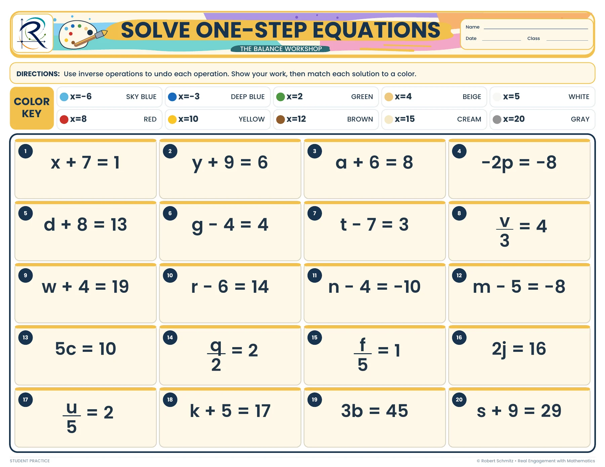
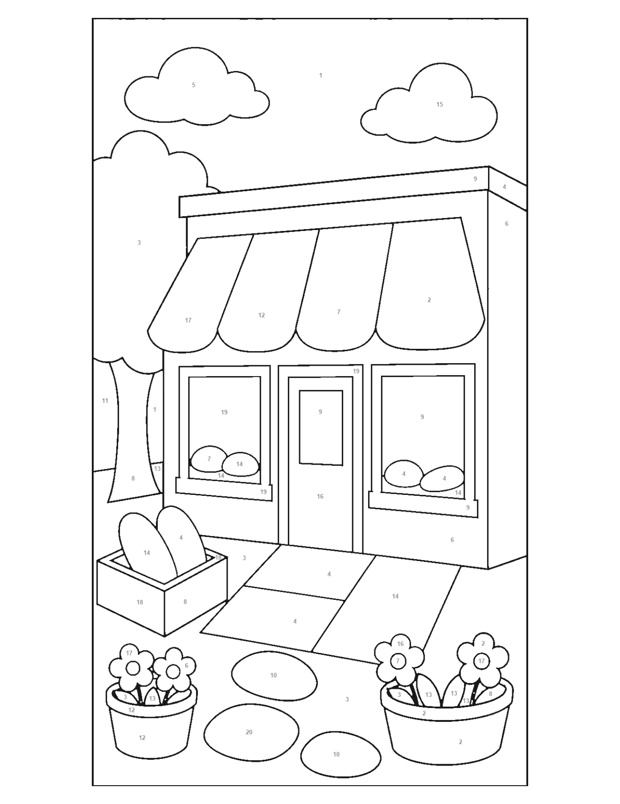
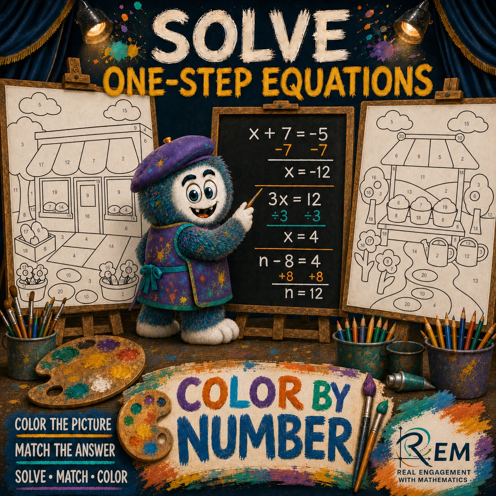

{kind=link}
{kind=link}
Keep the work visible
The equation sheet provides space for the steps. The color choice is a cue to revisit the mathematics; the written work gives the teacher something to inspect.
Visual practice · Answer-to-color mapping
Color By Number Solving one-step equations
An emerging picture gives repeated equation practice a visible destination.
Explore the actual materials ↓The learner experience
Learners solve one-step equations, match each solution to the color key, and fill the corresponding numbered regions. The mathematical workspace and the artwork work together: one holds the reasoning, the other marks progress.
Use inverse operations and record the equation work.
Find the solution in the key and color its numbered region.
Use the completed reference and worked key to investigate a mismatch.
Inside the resource
Selected pages from the actual resource files. Open any page to inspect the details.

Student resource, page 1. Twenty equations, a solution-to-color key, and space for written work.

Student resource, page 2. Numbered regions turn the solutions into a workshop illustration.

Teacher key, page 2. The finished scene supports a visual comparison after solving.
Why I designed it this way
The equation sheet provides space for the steps. The color choice is a cue to revisit the mathematics; the written work gives the teacher something to inspect.
The scene develops as learners complete problems. Because coloring is manual, a completed picture alone cannot establish correct reasoning or prevent guessing.

Open the original cover ↗Cover, character & visual identity
This original cover introduces Color By Number. The character, palette, and visual theme give the resource an identity; the student pages and teacher support show how the activity works.
 Explore the classroom design collection →
Explore the classroom design collection →Evidence & next evaluation
These authored materials show the activity structure and design decisions. Learner outcomes have not yet been measured for this case study.
Review equation work alongside the finished picture and check whether learners can solve a fresh item without the color key.
{kind=link}